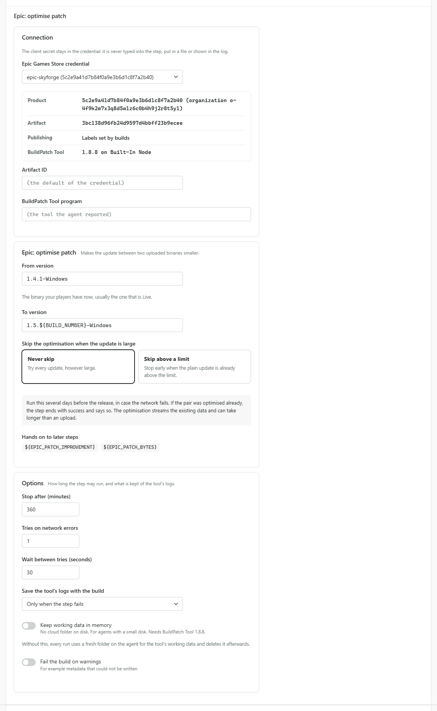

Epic: optimise patch
Make the update between two uploaded binaries smaller, so players download less.
When to use it
Use it after an upload, before the build goes live. Epic builds the update between two binaries from the data they hold. Optimising gives players a smaller download. Run it several days before the release, in case the network fails.
Every Epic step runs the Epic BuildPatch Tool on the agent. The agent needs the tool: see Install BuildPatch Tool. A step that needs a newer tool than the agent has stops with a message that names the version the agent has.
How to set it up
- Open the build configuration, then Settings › Build steps › Add build step.
- Type
Epicin Filter step types and click Epic: optimise patch. - Pick the credential.
- Type the From version, the one your players have now.
- Keep To version as the version of the upload step, or type another.
- Choose whether to skip large updates.
- Click Save.

Every field
Connection
| Field | What it does | Default | Example |
|---|---|---|---|
| Epic Games Store credential | The credential that holds your BuildPatch Tool keys. The list shows the credentials you may use. The secret is never typed in the step, never written to a file and never shown in the log. | None. The step fails if you pick nothing. | Epic Store (Skyforge) |
| Artifact ID | The Epic artifact to work on. Leave it empty to use the Default artifact ID of the credential. | Empty (the credential default) | 0f2b8a6c9d1e4c37a5e8b1d6c2f94a70 |
| BuildPatch Tool program | The full path of the BuildPatch Tool program on the agent. Leave it empty to use the tool the agent reported. | Empty (the tool the agent reported) | D:/Tools/BuildPatchTool/BuildPatchTool.exe |
Epic: optimise patch
| Field | What it does | Default | Example |
|---|---|---|---|
| From version | The binary your players have now, usually the one that is Live. It must differ from the To version. | Empty | 1.3.2-Windows |
| To version | The new binary. | ${EPIC_BUILD_VERSION} | 1.4.57-Windows |
| Skip the optimisation when the update is large | Never skip tries every update, however large. Skip above a limit stops early when the plain update is already above the limit. | Never skip | Skip above a limit |
| Limit | Shown for Skip above a limit. The size limit. The field checks the number as you type. | 8 | 8 |
| Unit | GB, GiB or % of the size of the to version. Needs BuildPatch Tool 1.8.8. | GB | GB |
The optimisation streams the existing data and can take longer than an upload. If the pair was optimised already, the step ends with success and says so.
Options
| Field | What it does | Default | Example |
|---|---|---|---|
| Stop after (minutes) | The step is stopped after this time. | 180 | 180 |
| Tries on network errors | How many times the step runs BuildPatch Tool when it fails because of a network problem. A wrong key or a missing permission is never tried again. | 1 | 3 |
| Wait between tries (seconds) | The pause between two tries. | 30 | 60 |
| Save the tool’s logs with the build | Whether the logs BuildPatch Tool wrote on the agent are kept as build artifacts in epic-logs. Choices: Only when the step fails, Always, Never. | Only when the step fails | Always |
| Keep working data in memory | Uses no cloud folder on disk. For agents with a small disk. Needs BuildPatch Tool 1.8.8. | Off | Off |
| Fail the build on warnings | Fails the step when BuildPatch Tool gave warnings, for example when metadata could not be written. Without it, warnings only show in the log. | Off | On |
The Stop after default of 180 minutes is the default of the upload step too, because both can run long.
Hands on to later steps
| Name | What it holds |
|---|---|
EPIC_PATCH_IMPROVEMENT | How much smaller the update became, as the tool reports it. |
EPIC_PATCH_BYTES | The size of the update in bytes. |
A worked example
Skyforge 1.3.2 is live. A build uploads 1.4.57 and runs Epic: optimise patch with From version 1.3.2-Windows, To version left at the upload's version, and Skip above a limit 8 GB. A later label step then makes 1.4.57 live.
What you see when it runs
Epic: credential Epic Store (Skyforge), product 8c1d5f, artifact 0f2b8a..., Publishing: Labels set by builds ... Epic: Step output EPIC_PATCH_IMPROVEMENT = 38% Epic: Step output EPIC_PATCH_BYTES = 1412398080
When the pair was done before, you see Epic: the pair 1.3.2-Windows to 1.4.57-Windows was optimised already. Nothing more to do.
Problems and fixes
| Message | What to do |
|---|---|
| The from version and the to version are the same | Choose two different versions. |
| The output has no Improvement line, so no result is handed on | This is a warning. Turn on Fail the build on warnings only if you rely on the result. |
| The step ran longer than N minutes | Raise Stop after (minutes), or use Skip above a limit. |
| A binary does not exist | Upload it first, or check the version with Epic: inspect binaries. |
Related pages
- Epic Games Store upload
- Epic: label binary
- Epic: inspect binaries: compare two builds.